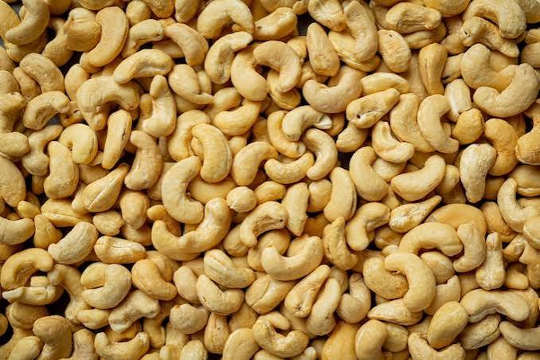
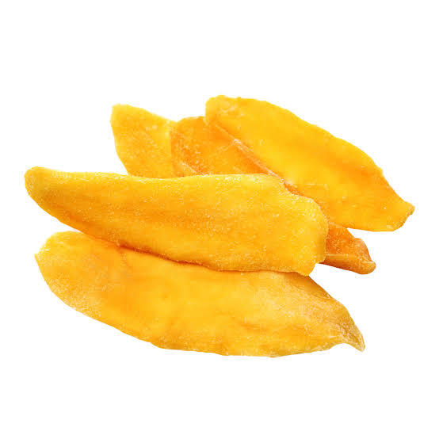
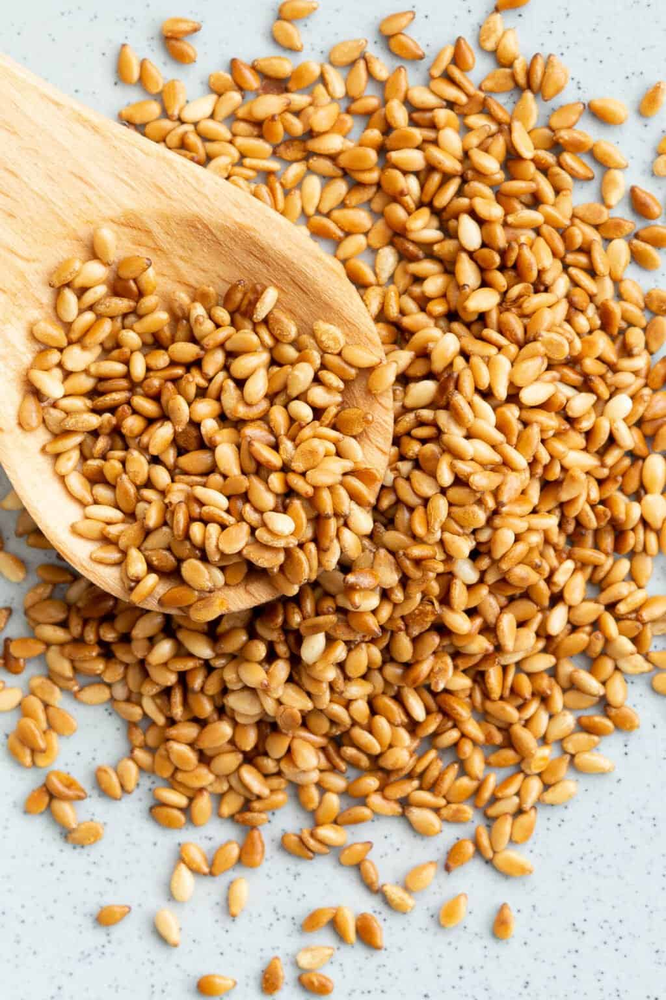
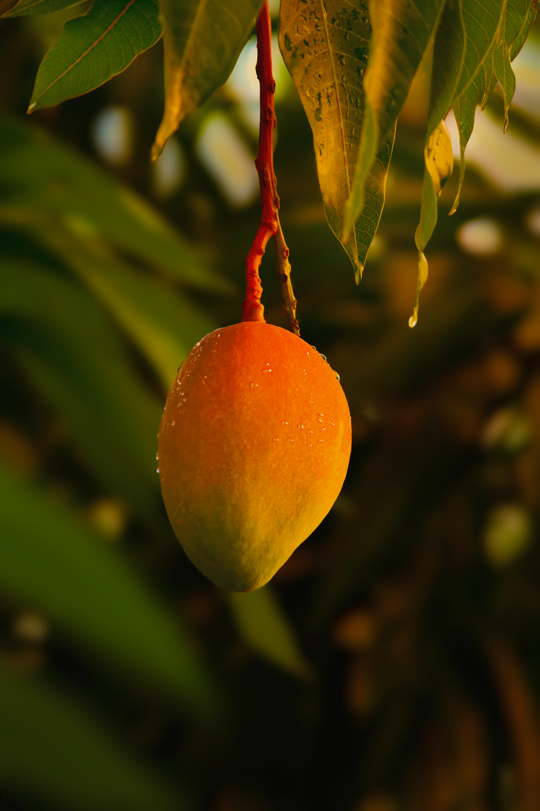

Burkina Faso — produits agricoles 100% biologiques
BIO Agro Business sélectionne, contrôle et exporte une large gamme de produits agricoles biologiques — noix de cajou, mangue séchée, sésame et bien d'autres — tracés du champ à l'export, pour la consommation directe comme pour l'industrie.
Nous ne vendons pas seulement des produits agricoles. Nous garantissons une chaîne de confiance, du champ jusqu'au port.
Deux engagements qui font notre différence : le respect du cahier des charges défini et des calibres maîtrisés.
Chaque lot est produit et contrôlé selon un cahier des charges défini avec vos équipes, du champ jusqu'au conditionnement. Aucun maillon ne déroge.
Des produits triés et calibrés aux standards d'export, avec une homogénéité vérifiée lot par lot et des volumes conformes à votre spécification.
Cajou, mangue séchée et sésame sont nos spécialités phares — et notre gamme ne s'arrête pas là : nous commercialisons une large variété de produits agricoles, du champ jusqu'à votre marché.

Récoltée dans les vergers du Sud-Ouest burkinabè, décortiquée et calibrée pour répondre aux standards d'export. Disponible entière ou brisée, nature ou torréfiée.

Séchée à basse température pour préserver la texture et le goût, sans sucres ni conservateurs ajoutés. Un produit prêt pour la consommation directe ou la transformation.

Graines blanches et rouges, triées et nettoyées avant export, adaptées à la fabrication d'huile, de tahini ou à un usage direct en agroalimentaire.

Séchée à basse température pour préserver la texture et le goût, sans sucres ni conservateurs. Une production soignée, du verger à l'expédition, pour la consommation directe comme pour la transformation.
Un parcours contrôlé à chaque maillon, pour garantir l'origine et la qualité biologique du produit.
Les producteurs partenaires récoltent selon un cahier des charges bio strict, sans intrants chimiques.
Chaque lot est inspecté et calibré avant d'entrer en transformation.
Procédés adaptés à chaque filière pour préserver la qualité biologique du produit.
Traçabilité documentée jusqu'à l'embarquement, vers l'Europe, l'Amérique du Nord et le Moyen-Orient.
Des produits prêts à consommer, conditionnés pour la vente directe ou la distribution en épicerie fine et magasins bio.
Des volumes en vrac, calibrés selon vos spécifications, pour l'agroalimentaire, la cosmétique ou la nutrition.
Décrivez vos besoins : produits, volumes, calibres et cahiers des charges. Notre équipe vous prépare une proposition et un devis sous 48h.